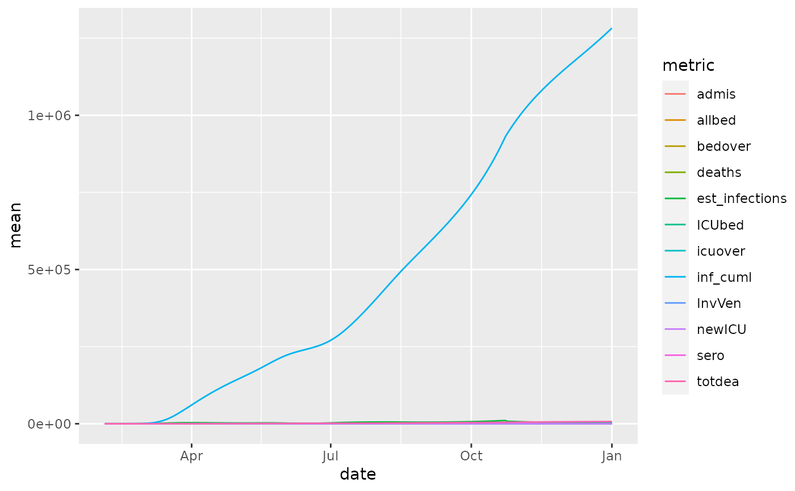

R/healthdata_projections_data.R
healthdata_projections_data.RdThese are time-series data that forecaset the COVID-19 impact on hospital bed-days, ICU-days, ventilator-days, and deaths by US state and selected additional countries or regions. The data are those used here https://covid19.healthdata.org/projections.
healthdata_projections_data()
data.frame with columns for:
location_name
date
metric: such as all beds needed
mean, upper, lower: mean, upper confidence interval, lower confidence interval
Other data-import:
apple_mobility_data(),
beoutbreakprepared_data(),
cdc_aggregated_projections(),
cdc_excess_deaths(),
cdc_social_vulnerability_index(),
coronanet_government_response_data(),
cov_glue_lineage_data(),
cov_glue_newick_data(),
cov_glue_snp_lineage(),
covidtracker_data(),
descartes_mobility_data(),
ecdc_data(),
economist_excess_deaths(),
eu_data_cache_data(),
google_mobility_data(),
government_policy_timeline(),
healthdata_mobility_data(),
healthdata_testing_data(),
jhu_data(),
jhu_us_data(),
kff_icu_beds(),
nytimes_county_data(),
oecd_unemployment_data(),
owid_data(),
param_estimates_published(),
us_county_geo_details(),
us_county_health_rankings(),
us_healthcare_capacity(),
us_hospital_details(),
us_state_distancing_policy(),
usa_facts_data()
Other healthcare-system:
us_healthcare_capacity()
Other projections:
cdc_aggregated_projections()
#> [1] "location_name" "date" "allbed_mean" #> [4] "ICUbed_mean" "InvVen_mean" "admis_mean" #> [7] "newICU_mean" "bedover_mean" "icuover_mean" #> [10] "deaths_mean" "totdea_mean" "est_infections_mean" #> [13] "allbed_upper" "ICUbed_upper" "InvVen_upper" #> [16] "admis_upper" "newICU_upper" "bedover_upper" #> [19] "icuover_upper" "deaths_upper" "totdea_upper" #> [22] "est_infections_upper" "allbed_lower" "ICUbed_lower" #> [25] "InvVen_lower" "admis_lower" "newICU_lower" #> [28] "bedover_lower" "icuover_lower" "deaths_lower" #> [31] "totdea_lower" "est_infections_lower"#> # A tibble: 6 x 32 #> location_name date allbed_mean ICUbed_mean InvVen_mean admis_mean #> <chr> <date> <dbl> <dbl> <dbl> <dbl> #> 1 Provincia au… 2020-03-18 107. 29.8 28.8 23.3 #> 2 Valencian Co… 2020-09-08 13.2 4.07 3.73 1.98 #> 3 Antigua and … 2020-09-17 7.15 1.72 1.57 1.26 #> 4 Thuringia 2020-05-25 44.1 14.7 13.0 3.87 #> 5 Oman 2020-02-25 0 0 0 0 #> 6 Catalonia 2020-07-02 52.5 17.2 15.2 5.76 #> # … with 26 more variables: newICU_mean <dbl>, bedover_mean <dbl>, #> # icuover_mean <dbl>, deaths_mean <dbl>, totdea_mean <dbl>, #> # est_infections_mean <dbl>, allbed_upper <dbl>, ICUbed_upper <dbl>, #> # InvVen_upper <dbl>, admis_upper <dbl>, newICU_upper <dbl>, #> # bedover_upper <dbl>, icuover_upper <dbl>, deaths_upper <dbl>, #> # totdea_upper <dbl>, est_infections_upper <dbl>, allbed_lower <dbl>, #> # ICUbed_lower <dbl>, InvVen_lower <dbl>, admis_lower <dbl>, #> # newICU_lower <dbl>, bedover_lower <dbl>, icuover_lower <dbl>, #> # deaths_lower <dbl>, totdea_lower <dbl>, est_infections_lower <dbl>#> Rows: 83,386 #> Columns: 32 #> $ location_name <chr> "Abruzzo", "Abruzzo", "Abruzzo", "Abruzzo", "Abr… #> $ date <date> 2020-02-04, 2020-02-05, 2020-02-06, 2020-02-07,… #> $ allbed_mean <dbl> 0, 0, 0, 0, 0, 0, 0, 0, 0, 0, 0, 0, 0, 0, 0, 0, … #> $ ICUbed_mean <dbl> 0, 0, 0, 0, 0, 0, 0, 0, 0, 0, 0, 0, 0, 0, 0, 0, … #> $ InvVen_mean <dbl> 0, 0, 0, 0, 0, 0, 0, 0, 0, 0, 0, 0, 0, 0, 0, 0, … #> $ admis_mean <dbl> 0, 0, 0, 0, 0, 0, 0, 0, 0, 0, 0, 0, 0, 0, 0, 0, … #> $ newICU_mean <dbl> 0, 0, 0, 0, 0, 0, 0, 0, 0, 0, 0, 0, 0, 0, 0, 0, … #> $ bedover_mean <dbl> 0, 0, 0, 0, 0, 0, 0, 0, 0, 0, 0, 0, 0, 0, 0, 0, … #> $ icuover_mean <dbl> 0, 0, 0, 0, 0, 0, 0, 0, 0, 0, 0, 0, 0, 0, 0, 0, … #> $ deaths_mean <dbl> 0, 0, 0, 0, 0, 0, 0, 0, 0, 0, 0, 0, 0, 0, 0, 0, … #> $ totdea_mean <dbl> 0, 0, 0, 0, 0, 0, 0, 0, 0, 0, 0, 0, 0, 0, 0, 0, … #> $ est_infections_mean <dbl> 0.0000000, 0.0000000, 0.0000000, 0.0000000, 0.00… #> $ allbed_upper <dbl> 0, 0, 0, 0, 0, 0, 0, 0, 0, 0, 0, 0, 0, 0, 0, 0, … #> $ ICUbed_upper <dbl> 0, 0, 0, 0, 0, 0, 0, 0, 0, 0, 0, 0, 0, 0, 0, 0, … #> $ InvVen_upper <dbl> 0, 0, 0, 0, 0, 0, 0, 0, 0, 0, 0, 0, 0, 0, 0, 0, … #> $ admis_upper <dbl> 0, 0, 0, 0, 0, 0, 0, 0, 0, 0, 0, 0, 0, 0, 0, 0, … #> $ newICU_upper <dbl> 0, 0, 0, 0, 0, 0, 0, 0, 0, 0, 0, 0, 0, 0, 0, 0, … #> $ bedover_upper <dbl> 0, 0, 0, 0, 0, 0, 0, 0, 0, 0, 0, 0, 0, 0, 0, 0, … #> $ icuover_upper <dbl> 0, 0, 0, 0, 0, 0, 0, 0, 0, 0, 0, 0, 0, 0, 0, 0, … #> $ deaths_upper <dbl> 0, 0, 0, 0, 0, 0, 0, 0, 0, 0, 0, 0, 0, 0, 0, 0, … #> $ totdea_upper <dbl> 0, 0, 0, 0, 0, 0, 0, 0, 0, 0, 0, 0, 0, 0, 0, 0, … #> $ est_infections_upper <dbl> 0.0000000, 0.0000000, 0.0000000, 0.0000000, 0.00… #> $ allbed_lower <dbl> 0, 0, 0, 0, 0, 0, 0, 0, 0, 0, 0, 0, 0, 0, 0, 0, … #> $ ICUbed_lower <dbl> 0, 0, 0, 0, 0, 0, 0, 0, 0, 0, 0, 0, 0, 0, 0, 0, … #> $ InvVen_lower <dbl> 0, 0, 0, 0, 0, 0, 0, 0, 0, 0, 0, 0, 0, 0, 0, 0, … #> $ admis_lower <dbl> 0, 0, 0, 0, 0, 0, 0, 0, 0, 0, 0, 0, 0, 0, 0, 0, … #> $ newICU_lower <dbl> 0, 0, 0, 0, 0, 0, 0, 0, 0, 0, 0, 0, 0, 0, 0, 0, … #> $ bedover_lower <dbl> 0, 0, 0, 0, 0, 0, 0, 0, 0, 0, 0, 0, 0, 0, 0, 0, … #> $ icuover_lower <dbl> 0, 0, 0, 0, 0, 0, 0, 0, 0, 0, 0, 0, 0, 0, 0, 0, … #> $ deaths_lower <dbl> 0, 0, 0, 0, 0, 0, 0, 0, 0, 0, 0, 0, 0, 0, 0, 0, … #> $ totdea_lower <dbl> 0, 0, 0, 0, 0, 0, 0, 0, 0, 0, 0, 0, 0, 0, 0, 0, … #> $ est_infections_lower <dbl> 0.0000000, 0.0000000, 0.0000000, 0.0000000, 0.00…summary(res)#> location_name date allbed_mean ICUbed_mean #> Length:83386 Min. :2020-02-04 Min. : 0.00 Min. : 0.000 #> Class :character 1st Qu.:2020-04-04 1st Qu.: 0.00 1st Qu.: 0.000 #> Mode :character Median :2020-06-03 Median : 33.07 Median : 9.419 #> Mean :2020-06-03 Mean : 915.06 Mean : 236.274 #> 3rd Qu.:2020-08-02 3rd Qu.: 326.18 3rd Qu.: 87.046 #> Max. :2020-10-01 Max. :99107.16 Max. :20001.934 #> #> InvVen_mean admis_mean newICU_mean bedover_mean #> Min. : 0.000 Min. : 0.000 Min. : 0.000 Min. : 0.00 #> 1st Qu.: 0.000 1st Qu.: 0.000 1st Qu.: 0.000 1st Qu.: 0.00 #> Median : 8.522 Median : 4.501 Median : 1.293 Median : 0.00 #> Mean : 208.576 Mean : 122.923 Mean : 30.939 Mean : 73.96 #> 3rd Qu.: 77.279 3rd Qu.: 44.210 3rd Qu.: 11.602 3rd Qu.: 0.00 #> Max. :17644.111 Max. :14534.367 Max. :3100.729 Max. :69067.07 #> #> icuover_mean deaths_mean totdea_mean est_infections_mean #> Min. : 0.0 Min. :-235.0000 Min. : 0.00 Min. : 0.0 #> 1st Qu.: 0.0 1st Qu.: 0.0000 1st Qu.: 2.16 1st Qu.: 11.1 #> Median : 0.0 Median : 0.9819 Median : 83.00 Median : 220.8 #> Mean : 123.4 Mean : 21.7923 Mean : 1935.65 Mean : 5446.3 #> 3rd Qu.: 0.0 3rd Qu.: 8.0000 3rd Qu.: 709.96 3rd Qu.: 1737.3 #> Max. :19178.9 Max. :2709.0000 Max. :175167.53 Max. :1056381.7 #> NA's :236 NA's :236 #> allbed_upper ICUbed_upper InvVen_upper admis_upper #> Min. : 0.0 Min. : 0.00 Min. : 0.0 Min. : 0.00 #> 1st Qu.: 0.0 1st Qu.: 0.00 1st Qu.: 0.0 1st Qu.: 0.00 #> Median : 62.3 Median : 15.35 Median : 13.5 Median : 11.45 #> Mean : 2021.9 Mean : 488.72 Mean : 428.3 Mean : 287.52 #> 3rd Qu.: 565.5 3rd Qu.: 147.00 3rd Qu.: 130.0 3rd Qu.: 87.51 #> Max. :321829.6 Max. :71452.00 Max. :64181.5 Max. :51512.12 #> #> newICU_upper bedover_upper icuover_upper deaths_upper #> Min. : 0.00 Min. : 0.0 Min. : 0.0 Min. :-235.0 #> 1st Qu.: 0.00 1st Qu.: 0.0 1st Qu.: 0.0 1st Qu.: 0.0 #> Median : 2.50 Median : 0.0 Median : 0.0 Median : 1.0 #> Mean : 65.61 Mean : 794.8 Mean : 352.2 Mean : 42.1 #> 3rd Qu.: 21.05 3rd Qu.: 0.0 3rd Qu.: 0.0 3rd Qu.: 13.0 #> Max. :11433.50 Max. :303877.6 Max. :70861.0 Max. :6140.2 #> NA's :236 #> totdea_upper est_infections_upper allbed_lower #> Min. : 0.00 Min. : 0.0 Min. : 0.00 #> 1st Qu.: 2.34 1st Qu.: 26.6 1st Qu.: 0.00 #> Median : 97.00 Median : 442.1 Median : 1.25 #> Mean : 2580.30 Mean : 14395.1 Mean : 519.02 #> 3rd Qu.: 961.96 3rd Qu.: 3320.8 3rd Qu.: 156.98 #> Max. :208078.85 Max. :2745003.4 Max. :60549.94 #> NA's :236 #> ICUbed_lower InvVen_lower admis_lower newICU_lower #> Min. : 0.000 Min. : 0.00 Min. : 0.00 Min. : 0.000 #> 1st Qu.: 0.000 1st Qu.: 0.00 1st Qu.: 0.00 1st Qu.: 0.000 #> Median : 0.229 Median : 0.10 Median : 0.00 Median : 0.000 #> Mean : 144.154 Mean : 128.32 Mean : 62.67 Mean : 18.221 #> 3rd Qu.: 43.500 3rd Qu.: 38.85 3rd Qu.: 17.49 3rd Qu.: 5.264 #> Max. :18351.248 Max. :16725.56 Max. :8244.18 Max. :2656.285 #> #> bedover_lower icuover_lower deaths_lower totdea_lower #> Min. : 0.000 Min. : 0.00 Min. :-235.0000 Min. : 0.00 #> 1st Qu.: 0.000 1st Qu.: 0.00 1st Qu.: 0.0000 1st Qu.: 2.03 #> Median : 0.000 Median : 0.00 Median : 0.2034 Median : 65.00 #> Mean : 7.003 Mean : 57.38 Mean : 14.4232 Mean : 1660.81 #> 3rd Qu.: 0.000 3rd Qu.: 0.00 3rd Qu.: 4.0000 3rd Qu.: 563.52 #> Max. :7256.475 Max. :9036.51 Max. :2709.0000 Max. :162370.43 #> NA's :236 NA's :236 #> est_infections_lower #> Min. : 0.00 #> 1st Qu.: 2.45 #> Median : 71.00 #> Mean : 2393.54 #> 3rd Qu.: 691.76 #> Max. :254480.58 #>#plot the predictions regs_of_interest = 'Georgia' library(ggplot2) pl = res %>% dplyr::filter(location_name %in% regs_of_interest) %>% ggplot(aes(x=date)) + geom_line(aes(y=mean, color=metric)) # plot the "mean" prediction pl#> Error in FUN(X[[i]], ...): object 'metric' not found#> Error in FUN(X[[i]], ...): object 'metric' not foundregs_of_interest = c('New York', 'Italy') pl = res %>% dplyr::filter(location_name %in% regs_of_interest) %>% ggplot(aes(x=date)) + geom_line(aes(y=mean, color=metric)) + facet_grid(rows = vars(location_name)) pl#> Error in FUN(X[[i]], ...): object 'metric' not found